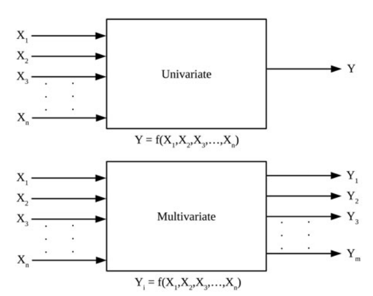

NeXLUncertainties.jl
Installing NeXLUncertainies.jl
NeXLUncertainies is available throught the standard Julia registry and can be installed using the standard package manager.
julia> ]add NeXLUncertaintiesor
julia> using Pkg
julia> Pkg.add("NeXLUncertainties")About NeXLUncertainties.jl
NeXLUncertainies is a library for propagating the uncertainty in multivariate measurement models. What does this mean?
A measurement model is a way to transform the measured values into the desired output values. A very simple measurement model would be the following:
- You measure a length in inches but need to transform the measured value by multiplying by 25.4 mm/inch to report in millimeters.
- Slightly more complex, you measure the length and width of a rectangle and need to report the area.
These models are considered univariate because there is a single output value.
A multivariate measurement model is a model in which there are multiple outputs. 
A simple example of multivariate measurement model:
- You measure the length and width of a rectangle and need to report the area, the perimeter and the aspect ratio.
If you have a model of the univariate type Measurements.jl is probably what you want. If you have a model of the multivariate-type NeXLUncertainties might be a better choice.
Often the distinction doesn't matter. However, if, in our simple multivariate example, the area, perimeter and aspect ratio are used in subsequent calculations, ignoring the correlations between these values is likely to mis-estimate the resulting uncertainty.
The distinctions can matter for X-ray microanalysis where many k-ratios are measured and many compositional metrics are reported. In between, there is a complex measurement model that depends upon many measured inputs and many physical parameters. Hence this library was developed as part of the NeXL collection of X-ray microanalysis algorithms.
Important Types
There are two ways to represent numbers with associated uncertainties in NeXLUncertainies
UncertainValue- Represents a single quantity with associated uncertaintyUncertainValues- Represents a collection of related quantities with the associated uncertainty relationships
There are two important utility types
Label- Provides an abstract type for labels that uniquely identify and track quantitiesLabeledValues- A collection ofLabeled quantities (no associated uncertainties)
UncertainValue
An UncertainValue is a simple wrapper around a value and an associated variance. UncertainValue objects are often used as inputs to calculations or outputs from calculations as they are more "user friendly".
Common operations:
julia> a = uv(1.2,0.1) # Creates an `UncertainValue`
1.2 ± 0.1
julia> σ(a)
0.1
julia> value(a)
1.2
julia> variance(a)
0.01Label
Label is an abstract class that can represent either simple or complex mechanisms to uniquely identify quantities. If a quantity is used in two part of a calculation, the way that we identify that these two values are related is through the label.
julia> l = nl"X" # Constructs a String-based label
X
julia> m = label(12) # Constructs an Int-based label
12LabeledValues
LabeledValues are like a dictionary mapping a Label into a quantity.
julia> lvs = LabeledValues( nl"A"=>3.4, nl"B"=>4.5, nl"C"=>5.6 )
LabeledValues[
A => 3.4
B => 4.5
C => 5.6
]
julia> lvs[nl"A"]
3.4UncertainValues
An UncertainValues represents a collection of Labeled quantities and the associated covariance matrix. UncertainValues often represent the output of a measurement model (or calculation). Each quantity in the UncertainValues object is identified by a unique Label to permit values, variances and covariances to be readily tracked.
julia> u1 = uvs([ nl"A", nl"B", nl"C"], [3.4, 4.5, 5.6], [ 0.01 0.001 0.0; 0.001 0.004 0.0; 0.0 0.0 0.009 ])
Variable Value A B C
A | 3.4 | | 0.01 0.001 0 |
B | 4.5 | | 0.001 0.004 0 |
C | 5.6 | | 0 0 0.009 |
julia> u1[nl"B"]
4.5 ± 0.063
julia> covariance(u1, nl"A", nl"B")
0.001
julia> value(u1, nl"A")
3.4
julia> σ(u1, nl"A")
0.1Propagating Uncertainties
Implementations of the MeasurementModel abstract type provide the mechanism by which uncertainties are propagated. Types implementing the MeasurementModel type are responsible for implementing one method:
julia> compute(mm::YourMeasurementModel, inputs::LabeledValues, withJac::Boolean)::MMResultwhere
MMResult = Tuple{LabeledValues, Union{Missing,AbstractMatrix{Float64}}}The compute(...) takes a LabeledValues object which defines where the model is to be evaluated. It returns either a Tuple{LabeledValues, Missing} (if withJac==false) or a Tuple{LabeledValues, AbstractMatrix{Float64}} (if withJac==true). The LabeledValues return value represents the measurement model evaluated at inputs. The AbstractMatrix{Float64} represents the Jacobian of the measurement model or the matrix of partial derivatives evaluated at inputs. Users of the library are responsible for defining the necessary MeasurementModel types and the associated compute(...) functions.
Getting Started
The pages in the left-hand menu will help you to get started. "Getting Started" provides an overview. "Resistor Network Example" shows how to implement multi-step MeasurementModels and use function composition to join the steps into a complex measurement model. "Composing Multi-Step Models" provides additional insight into how to use the ∘, | and ^ binary operators to combine simple steps into complex calculations.